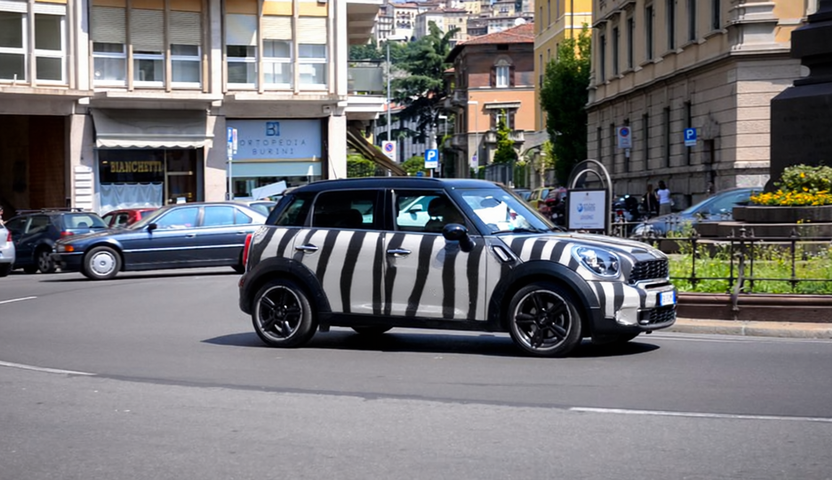
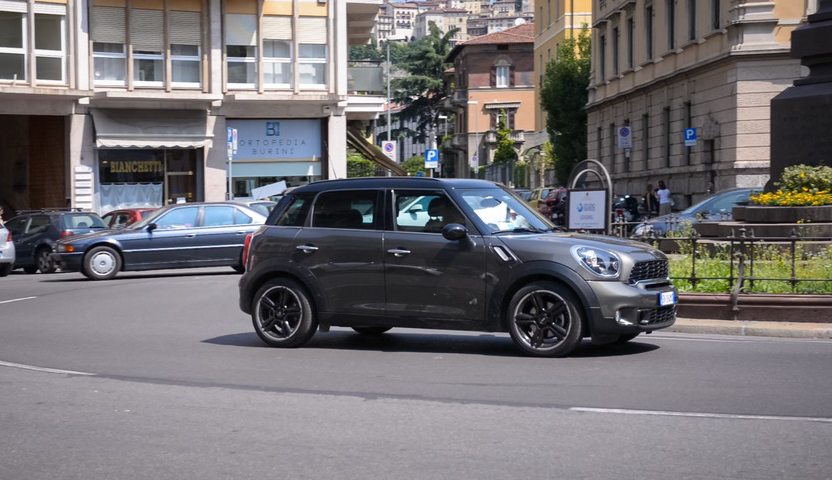
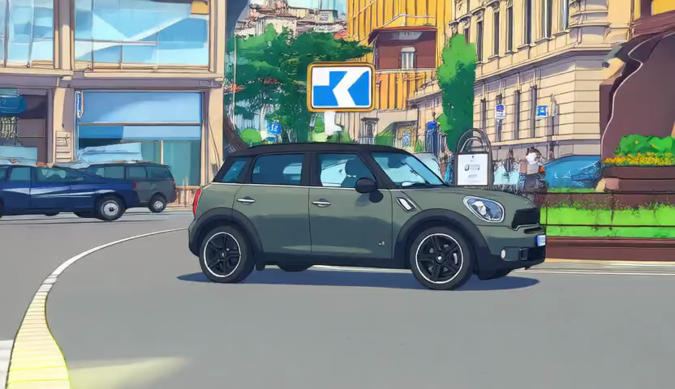
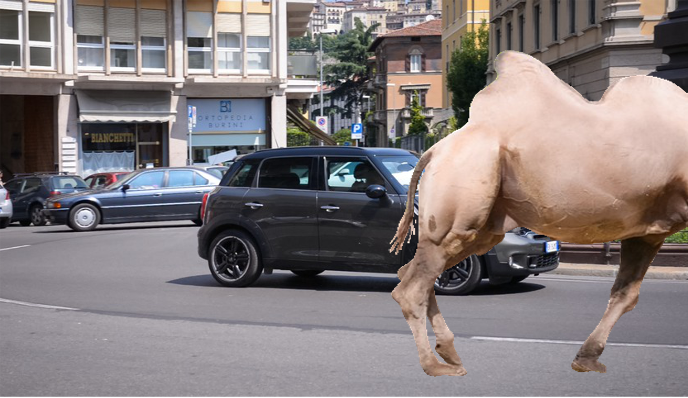

TL;DR: FreeOrbit4D is an effective training-free method for large-angle camera redirection via geometry-complete 4D proxy.
Interactive 4D point cloud reconstruction results. You can rotate, zoom, and play the dynamic sequence. For the best experience, please view on a desktop browser.
Input Video
4D Reconstruction
Output Video
Input Video
4D Reconstruction
Output Video
Input Video
4D Reconstruction
Output Video

Appearance
Editing (Color)

Geometry
Editing (Scaling)

Appearance
Editing (Style)

Geometry
Editing (Composition)
Original
Edited
Original
Edited
Original
Edited
Original
Edited
@article{cao2026freeorbit4d,
title={FreeOrbit4D: Training-Free Arbitrary Camera Redirection for Monocular Videos via Geometry-Complete 4D Reconstruction},
author={Cao, Wei and Zhang, Hao and Tian, Fengrui and Wu, Yulun and Li, Yingying and Wang, Shenlong and Yu, Ning and Liu, Yaoyao},
journal={arXiv preprint arXiv:2601.18993},
year={2026}
}